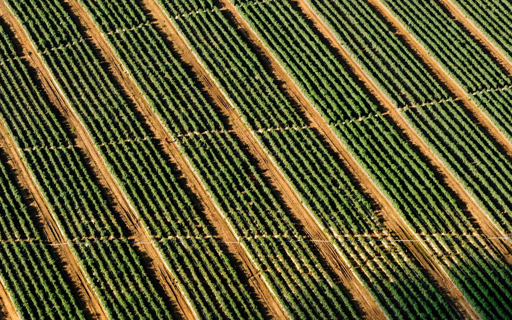
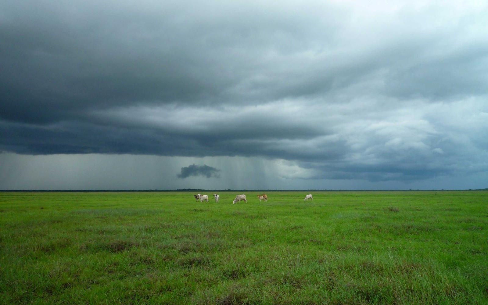
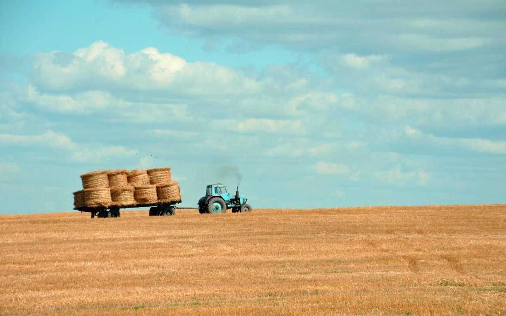
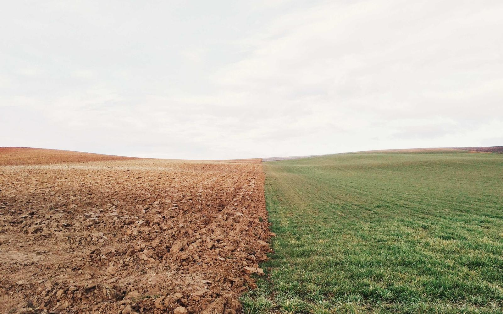

Il ricevimento del pomodoro
Provato prima di farlo. Un modello del flusso in una giornata di campagna: dai camion al cancello, dal carotaggio alle cinque vasche e alla linea. Cambia i parametri e guarda cosa succede.
Apri il simulatore
Una giornata di campagna
Scegli uno scenario, poi regola i parametri. Il modello usa un minuto come passo e gira due giorni, così la coda ha il tempo di svuotarsi.
Le cinque vasche nel momento più pieno
Camion in coda nelle due giornate
Coda al cancello In attesa di scarico
Come oggi contro slot pianificati
Stesso scenario, stessi parametri: cambia solo il modo in cui arrivano i camion.
Il modello serve a capire i meccanismi, non a prevedere lo stabilimento. I valori segnati come stima o da chiedere vanno validati prima di usarli per decidere. Il profilo degli arrivi di oggi, con più camion nelle ore centrali, è un’ipotesi.

Il meteo cambia il piano
“Basta un cambio del tempo e devi rifare tutta la pianificazione. Non lo sai fino all’ultimo minuto.”
La pioggia ferma la raccolta, poi i camion arrivano tutti insieme. Lo scenario “Pioggia e ondata” mostra cosa succede al cancello e cosa cambia con gli slot.
Il flusso che il modello replica
Il camion arriva al cancello
Dal campo arriva in circa due ore. Nel modello aspetta una postazione di carotaggio libera.
Carotaggio e laboratorio
Si preleva un campione di circa 15 chili, lo si lava e lo si analizza. Il laboratorio decide se il carico è accettato. Il camion rifiutato vende altrove ed esce dal modello.
Scarico nelle baie
Il camion accettato entra in una baia e scarica solo se una vasca ha spazio per il suo carico.
Cinque vasche e la linea
Ogni vasca riceve circa quattro camion. La linea prende dalla vasca più piena. Se le vasche sono vuote, la linea resta senza prodotto.

Le cifre che abbiamo e quelle che mancano
260
camion al giorno nei giorni di punta a Montechiarugolo, per circa 6.000 t di pomodoro fresco.
8
camion all’ora in scarico a pieno regime, dato storico. Con 260 camion al giorno ne servono circa 11.
3
numeri interni da chiedere a Mutti: attese al cancello, durata del carotaggio e quota di carichi rifiutati.
Fonti e limiti
- Linkiesta, agosto 2025: 260 camion e circa 6.000 t al giorno nei giorni di punta.
- Terra e Vita, circa 2019: otto camion all’ora a pieno regime e trasporto organizzato da Mutti.
- SMAU 2022, caso Mutti: campione di circa 20 chili, cernita e analisi in laboratorio.
- ARPAE, AIA DAMB/2021/2600: capacità autorizzata di 3.200 t al giorno di prodotto finito.
- Mutti, comunicato 2022: ricevimento aperto 24 ore su 24 durante la campagna.
- Video pubblico della visita allo stabilimento, campagna 2025: cinque vasche con quattro camion ciascuna e carotaggio su ogni camion.
Le fonti pubbliche non danno attese al cancello, numero di baie o regole di pianificazione. Dove mancano, il modello usa stime e le segna come tali.
